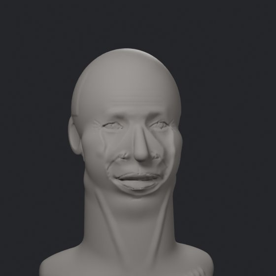
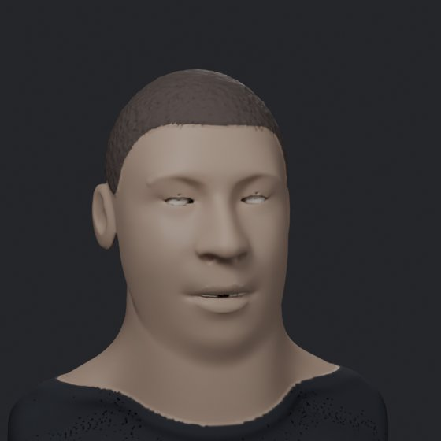
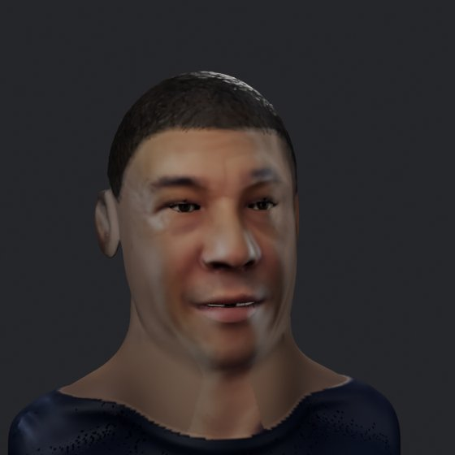
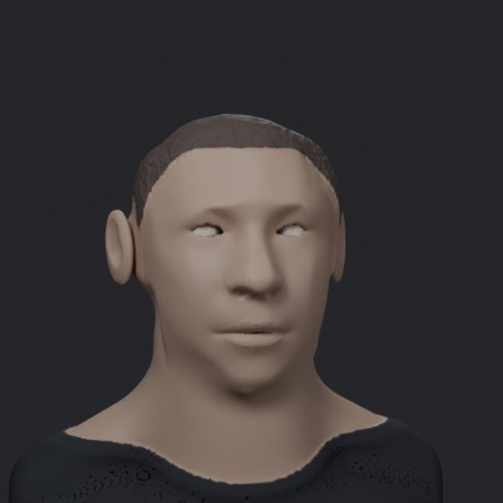
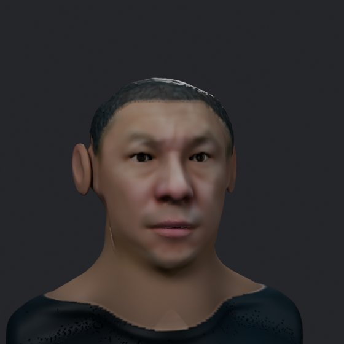
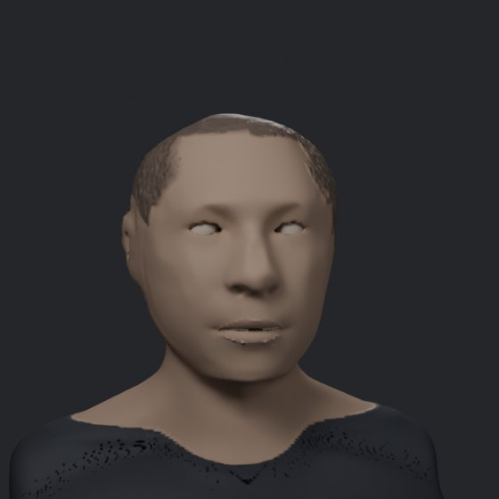
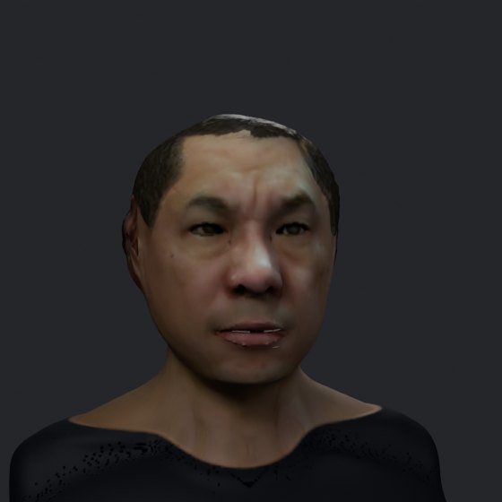
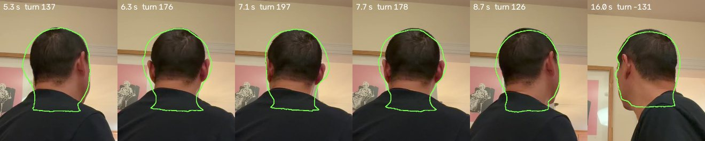
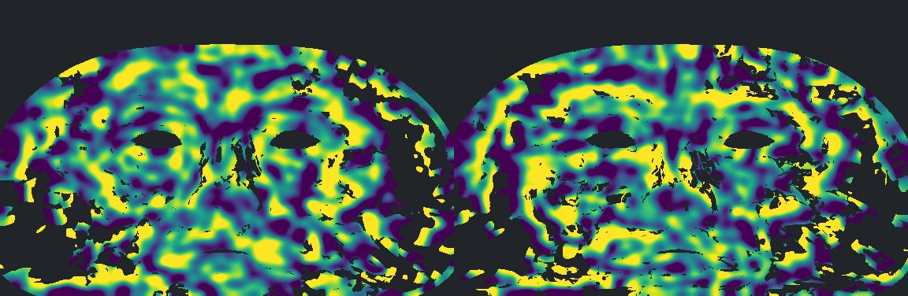
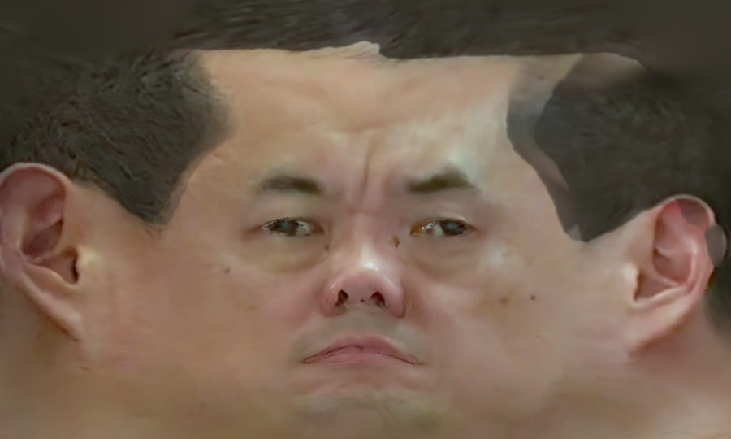

A Blender bust built from nine photos in Sam's own library. The shape is measured from his face across all nine, and the expressions and head movements come from those same photos. Watch every brush stroke build the head below, then make faces with the finished sculpt.
Each line in the log is one stroke or step. Click a line to jump the video there. After the sculpt, the video runs through the expressions and head poses taken from the photos.
The finished bust is live below. Each expression is a shape key measured from one of the photos, and the head turns and tilts the way it did when each photo was taken. Press Perform to watch it cycle through all of them with idle motion and blinks, or mix your own with the sliders.
All nine came from the "Sam Ling" person album in Apple Photos. Photos' own face labels confirmed which face was Sam's, and each crop was cut so his face is the only one in it. The photos themselves are not published here, only measurements taken from them.
| Photo | Expression | Head pose |
|---|
Google's MediaPipe Face Landmarker finds 478 points on each face, with an estimate of depth for each one. It also scores 52 expression channels, such as smile, squint, jaw open and brows up. Those scores sorted the photos from calmest to most expressive.
Each photo is fitted to a shared reference using 31 points that hardly move with expression: forehead, nose bridge, eye corners and temples. The leftover rotation is that photo's head pose. Stable points agree to within about 2 mm across all nine photos.
Taking the median across all nine photos sets the parts that don't change with expression. Using several views gives a much better estimate of depth than any single photo. The mouth, eyes, brows and cheeks come from the two calmest photos, weighted 70/30, so the bust rests near neutral.
The blockout uses the same distance-field method as the gecko: skull, face mass, jaw line, chin, nose, ears flared about 28° like his, neck and chest. A thin slit is cut along his measured lip line, opening into a mouth cavity behind it, so the jaw can open later.
The 468 surface points become a continuous face surface, which fades out where the face turns sideways. Three Grab passes pull the generic blockout onto that surface region by region. A voxel remesh then evens out the stretched triangles, just as you'd do by hand in Blender.
The detail strokes follow your own landmarks:
For each expressive photo, the shape key is how far its points sit from the resting face. That movement is spread smoothly over the skin, with each lip following only its own lip's points so the mouth can open. A Blink key was added by hand, closing the upper lids onto the lower ones.
w = exp(-(d/σ)²) # σ ≈ 7.5 mm move(v) = Σ wᵢ·Δᵢ / Σ wᵢ # Δᵢ = photo − rest lips: upper skin ← upper-lip points only
A two-bone rig (bust and head) bends the upper neck. In the "Performance" action, each expression comes with the head pose from its photo, scaled to 55% so it stays gentle. In the browser, the same rotation runs in a vertex shader on top of the morph targets.
This isn't a 3D scan. The photos are selfies, so wide-angle lenses enlarge the nose a little. Depth from a single photo is an estimate, and nine photos average it but can't measure it exactly. The sides and back of the head are sculpted rather than measured, and the hair is clay texture.
Take 1 was built from nine selfies, and it showed: the skull was an egg, the creases were gouges, and nothing about it said Sam. Take 2 starts over from one 12-second clip of Sam talking, laughing and looking around. Every frame is tracked, so the face is measured from 358 views instead of 9, the skull is fitted to his real outline, and the clip itself is painted onto the clay and replayed as motion.



The video itself isn't published here, only what was measured from it and the paint projected from it.
The finished take-2 bust, live. Play runs the whole 12-second clip on the sculpt: every frame's face shape, head turn and gaze, as tracked from the video. Scrub to any moment, jump to one of the highlights, or switch between the painted bust and bare clay.
The face moves through 12 motion shapes, a compressed form of the clip's tracked points that keeps 98% of their movement.
The clip is 12 seconds of Sam on his phone's front camera, talking, laughing, glancing around. MediaPipe tracks 478 face points and 52 expression scores on every one of the 358 frames, and none are lost.
Each frame's head position and rotation is solved from its 2D points through a perspective camera, rather than trusting each frame's own depth guess. The tracked points then sit within a few pixels of where the model says they should be.
One photo can't measure depth. A turning head can. I tried scaling the averaged face's depth up and down, re-solving every frame each time, and asked which version the video agrees with. It's 1.03×, so the averaged depth was kept nearly as it was. Letting every point's depth float freely made the face too flat, so it wasn't used.
depth ×0.85 → 1.61 px depth ×1.00 → 1.47 px depth ×1.15 → 1.54 px
Points are averaged across frames, each region weighted toward the frames where it is calm. The face is made 75% symmetric. The eyelids rest at his median opening across the clip (about 6 mm; he squints a lot), and the lips are closed.
Take 1's egg head was a guess. Here the skull is fitted to the outline of his head and hair in 30 frames: width, crown height, depth and centre are adjusted until its projection matches what the camera saw.
The measured face is laid onto the skull along rays from the centre of the head. The skull is then nudged to meet the face's edge, so the two meet without a step. Jaw, neck, shoulders and ears are blended into the same distance field, and a single remesh gives one clean 208k-vertex surface.
Take 1's harsh creases made it look carved. Take 2's first detail pass did the same thing: smile lines and cheek pads turned into lumps. So they came out. Only four light strokes remain, each traced along tracked points: nostrils, lid margins, brow ridge and lip border. The rest of the detail is in the paint.
For 179 frames the sculpt is posed and given that frame's expression, then the frame's colours are projected onto every point the camera could see. Hidden points are skipped. The window and lamp lighting is flattened, and the sides the camera never saw are filled in from what it did see.
Each sculpt vertex is tied to the tracked points through the face map, so any frame's tracked motion moves the clay directly. No hand-made shape keys are needed. The clip's 358 frames compress into 12 motion shapes, plus head rotation, gaze and jaw for every frame. That is what the player above runs.
v(t) = v₀ + W · Δ(t) # W: 208k × 468, sparse Δ(t) ≈ μ + Σₖ cₖ(t) · Bₖ # 12 shapes, 98%
The clip covers about 21° of turn, so the back of the head is fitted rather than seen, and the paint there is filled in. The phone's wide lens is modelled with an assumed field of view. Teeth, eyeballs and ears are sculpted, not measured, and the lighting baked into the video is only partly removed.
Take 2 still looked off, because a 12-second selfie only shows about 21° of turn. Most of its depth came from the tracker's built-in idea of a face. Take 3 uses a 47-second clip with the phone propped about 80 cm away while Sam spins in a chair, nods and looks up. Now the head's outline is seen from nearly every side. Like a cookie cutter pressed in from 745 directions, those outlines carve the head out of a block. The tracked face then presses its hollows into the carve: eye sockets, lips, the wings of the nose.


The clip itself isn't published here, only what was measured from it and the paint projected from it.
The take-3 head, running take 2's 12-second talking clip. Both are tracked with the same 478 points, so any clip's motion drives any take. Orbit all the way round: the back of the head is real this time, at least in outline.
The phone sits still about 80 cm away while Sam spins, nods, looks up and yawns. The face is found in 871 of the 1,421 frames. The other 550 are the back of his head, where there is no face to track.
With ±70° of turn, letting every tracked point's depth float is well posed: it moves each point by only 1.6 mm on average. The one-number depth test now picks ×1.10. In take 2, all the clip could do was confirm the tracker's own guess.
Each frame's outline, swept away from the camera, is a cone that the head must sit inside. Intersect 745 of them on a 2 mm grid and what's left is the head. Profiles cut the nose, lips and chin; nodding cuts the crown and the underside of the jaw. A voxel is removed only if more than three frames saw background through it, which absorbs small pose errors.
Without a face, the back views have no points to pose from. I tried two ways to recover their angles: matching outlines, and following hair texture from frame to frame. Neither held up. A head seen from behind is round enough that its outline hardly changes as it turns. So the back is an ellipsoid fitted to the carved sides and crown (4.5 mm rms), blended in behind the ears.
A visual hull can't see into hollows; the eye sockets and the groove between the lips are invisible to an outline. The tracked face can. So inside the face, the surface is the smaller of the two: the carve bounds the outside, the tracked points cut the hollows.
r(θ,φ) = min( r_face , r_carve ) # inside the face r(θ,φ) = r_carve # sides, crown r(θ,φ) = r_skull # back
249 frames are projected onto the sculpt after posing it and matching each frame's expression. That covers 67% of the surface, compared with 31% in take 2. The room's tungsten light made everything orange, so the median skin colour is balanced back to a neutral skin tone.
Take 4 uses the same 47-second chair clip as take 3, and changes three things. First, all 1,421 frames now have a head pose, including the 640 where the face tracker had nothing to hold on to, mostly the back of his head; take 3 gave up on those. Second, the paint is a proper texture built from 13 hand-picked sharp frames, registered to each other, instead of 249 blurry projections averaged together. That is like replacing a long-exposure photo with a careful panorama. Third, the sculpt replays the whole clip, chair spins included. Along the way one idea failed its own test and was thrown out; that is shown too.


The take-4 bust performing the clip it was made from: face, neck, eyes, and the chair turning under it. Play runs it in real time. The caption says whether each moment was tracked from his face or solved from the back of his head. You can still orbit while it plays.
Turn "Chair turn" off to keep the bust facing you while the face and neck still perform.
With no face in view there are no points to track, and a head seen from behind is too round for its outline to say which way it points. Take 3 stalled here. Take 4 reads the turn from the hair: dense optical flow between neighbouring frames, fitted as "the whole head slid by this much, and turned about the chair's axis by this much". Those two look different, because a turn moves the middle of the head faster than its edges. Summing the turn frame by frame gives the orange stretches below.
tracked from his face (781 frames) solved from hair flow (640 frames) seen from exactly behind
Summed flow drifts, so it needs pinning. The ends of each gap are pinned by the tracked poses either side. The middle is pinned by his ears: at the instant both ears show equal skin either side of the hair, the camera is exactly behind him, so the turn must be exactly 180°. That happens six times. On the clean chair turn, flow alone had said 109° and 121° where the ears say 117°.

The check: the sculpt's outline (green) drawn over six of the solved frames. Ears and nape line up. These back views are the only video frames shown on this page.
That last number is why the outline could not be used to calibrate: the silhouette agreement barely changes whether the flow is scaled by 0.7 or 1.5.
I expected the newly solved back views to re-carve the back of the head. They removed 1% of the carve. The geometry explains it: frames turned up to ±70° already pin every surface that faces within 160° of the front, leaving a ridge of at most 6 mm down the centre of the back. So the back views are used for paint and motion, and the ridge is just rounded off.
Take 3 swapped the back of the carve for a fitted ellipsoid and built the ears and neck by hand. Take 4 keeps the carve as the surface: its own ears, nape and neck. The tracked face and the carve disagreed at the face's rim by −6 to +11 mm, which showed as a mask-like step. The carve is the measured outline, so the face is shifted to meet it there and still cuts the hollows an outline can't see.
Could pairs of frames 14° apart measure the face's fine relief directly, the way two eyes do? I swept each point of the face through 25 depths and kept the depth where the two frames matched best. To check that the result was real, I solved it twice from two sets of frame pairs that share no frames. If the bumps are real, the two maps should agree.

Relief from set A (left) and set B (right), 15 pairs in all. They agree at r = 0.39, with about 1.3 mm of relief each: mostly noise. A first run scored 0.70, until I noticed two pairs sat in both sets. The phone's video compression smooths skin too much for this. Not used.
Take 3 averaged every frame's colours onto the clay, and each frame was off by a few millimetres, so the face came out soft. Take 4 picks 13 key frames where he is calm and nearly still: one frontal, four sides, one from below, one from above, six from behind. Each is projected onto the surface after giving it that frame's expression. Every later view is colour-matched to what is already painted and nudged into register by optical flow (6 to 10 texels, about 2 to 3 mm). Broad colour is blended widely; fine detail comes from the single best view.

The front half of the texture, unwrapped like a map of the globe. Going round the head both ways left two different exposures meeting at the back; they are cross-faded there. The eyeballs are painted separately from the frontal frame, through its own eyelid outline.
Each frame's head rotation is split into a turn about the chair's axis and whatever is left, which is the neck. The bust turns with the chair, up to about 200° each way; the neck bends up to 48°. The face moves through 16 motion shapes that keep 97.3% of the tracked motion. When he faces away, the face eases back to rest. One catch along the way: take 3's sanity check had thrown out the 36 widest frames of his yawn as tracking errors, because a jaw 4 cm open looked wrong to it. They are back in.
The texture has the room's lighting baked in, so the bust is lit twice. The carve can only be too big, never too small, and fine relief (pores, folds) is not in the clay at all. The back-of-head poses are good to a few degrees, not better. The frontal key frame caught a slight frown, and that is now his resting face. Teeth are still generic.